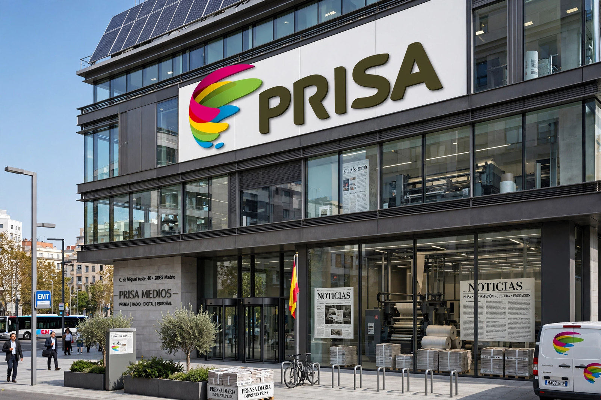

| PRISA | |
|---|---|
 PRISA headquarters, Madrid | |
| Type | Public (Sociedad Anónima) |
| Founded | 1972, Madrid, Spain |
| Founder | Jesús de Polanco |
| Products | El País, Cadena SER, Santillana (education) |
| Industry | Mass media; education |
PRISA (Promotora de Informaciones, S.A.) is a Spanish and Portuguese-language media conglomerate headquartered in Madrid. Founded in 1972 by Jesús de Polanco, it is best known as the publisher of El País, Spain's newspaper of record, launched on 4 May 1976, six months after Franco's death, and a leading voice of the Spanish transition to democracy.
The group's media arm, PRISA Media, includes El País; the sports daily As; the business paper Cinco Días; Cadena SER, Spain's leading radio network; and radio and music operations across Latin America including W Radio and Los 40. Its education arm, Santillana, is the largest educational publisher in the Spanish-speaking world. PRISA is listed on the Madrid Stock Exchange. The group historically also held stakes in pay television (Canal+ España) and the newspaper Le Monde.
Under Polanco and later his son Ignacio, PRISA expanded aggressively in the 1990s and 2000s, taking on heavy debt during the acquisition of Sogecable. The financial crisis forced a series of restructuring deals with creditors from 2010 onwards, diluting the founding family's stake. In 2020 the group sold Santillana's Spanish operations while retaining the Latin American education business, and separated its media and education divisions. Control contests among shareholders, including the French group Vivendi's accumulation of a stake, attracted political attention in the 2020s.